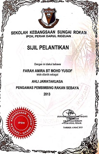
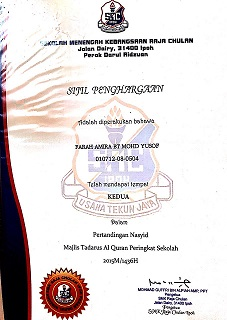

|
 |
 |
 |
 |
 |
 |
 |
||||||||||||||||||||||||||||
EDUCATION |
| “Education is not a race, it’s a journey.” |
| Primary school: Sekolah Kebangsaan Sungai Rokam, Ipoh, Perak (2008-2013) | ||
|---|---|---|
The experience in primary school was hard for me to remember as a whole but I had a lot of fun because I had met so many new friends and teachers who were always kind to me. Basically, without them, I would not be able to count, read and speak fluently. Terima kasih cikgu! In terms of achievement, I got a 3A 2B result for the UPSR. It was not a result I can be proud of but I am still thankful. Well, my journey and success would not stop here. In terms of co-curriculum, I am also not a great student of sports but with this physical involvement of co-curriculum, I was more active during primary school than secondary school. Maybe because I like to play. Among the successes, I have achieved in the field of primary school co-curriculum are:
|
||
|
UPSR Result
Netball Certificate
Handball Certificate
Bowling Certificate

AJK PRS Certificate
Choral Speaking Certificate
| ||
 |
||
| Secondary school: Sekolah Menengah Kebangsaan Raja Chulan, Ipoh, Perak (2014-2018) | ||
|---|---|---|
| My high school life was pretty challenging for me and it is the memories that is hard for me to forget. It is the process of getting to know myself, choosing the right friends and also the process for me to manage my life without anyone’s help because I lived in a hostel from form one to form 5. Lots of bitter and sweet memories I have gone through even though I am not mature enough to go through a lot of things, but to some extent, it can give me mental and physical preparation for me to go through university level and adulthood. For my academic achievement, I got 4A 4B 1C only for PT3 and got 2A 4B+ 2C+ for SPM that consists of core subjects, accounts, and economics.
While in co-curricular involvement in high school, I was more active in involvement involving committee members than sports. For example, I joined a music class from form one to form 5 where I learned to play musical instruments such as playing gamelan, kompang, trumpet, etc. and play at official school events or functions. Also, I got involved and got second place in the FENAS in 2014 and participated in the North Kinta Zone Rhythmic Speaking Competition in 2015. I also joined a volunteer program which is food preparation and serving to participants of Motivation Camp at the School Level of Kinta Utara District, Gunung Lang, Ipoh, Perak (25-26 August 2018). Moreover, I used to be a committee member in several clubs, sports, uniformed teams, and supervisors which was the best experience for me to further hone my leadership traits. Among them are:
|
||
|
EXCO Aspuri
Police Cadet
PRS
FENAS Certificate

Nasyid Competition Certificate
Hari Sukan Negara Certificate
Bicara Berirama Certificate
| ||
| University level: Universiti Teknologi MARA (UiTM) Merbok, Sungai Petani, Kedah (2019-2022) | ||
|---|---|---|
| In the university era, I started to be a student who focused on learning instead of sports involvement and a committee member. This is because my parents were less satisfied with my academic results while in high school. I applied for a course that involved my skills and crafts instead of involving mathematics and numbering. Then, I had accepted as a student of the Faculty of Information Management which involves the retrieval and organized information management skills. Alhamdulillah, along being an information management student, I get a dean list every semester and finally I can make my parents proud of me. Besides, I also joined the Runners club and held the position of secretary in 2019-2018 only because after the covid-19 pandemic hit the world, university students have to learn from home called Online Distance Learning (ODL). So the involvement of our sports and committee members is limited. But during the ODL, I was involved in the Photo Raya Editing Competition at a historic place in Malaysia and I got second place by winning a cash prize of RM40. Photo and video editing is a skills I had learned from the information management faculty that is very useful to me and I am very grateful to continue my studies here. I hope I can continue my studies at the undergraduate level with better experience. | ||
 | ||
| Copyright ©2021 Farah's Blog | 

 |
|